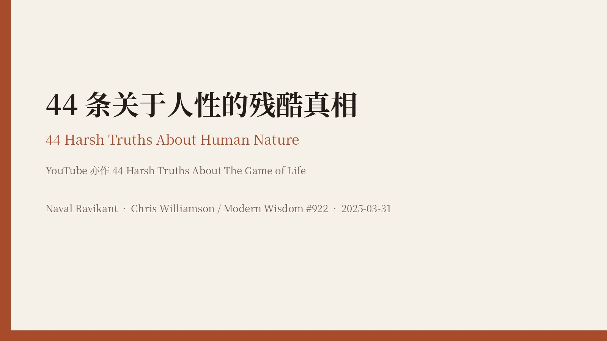
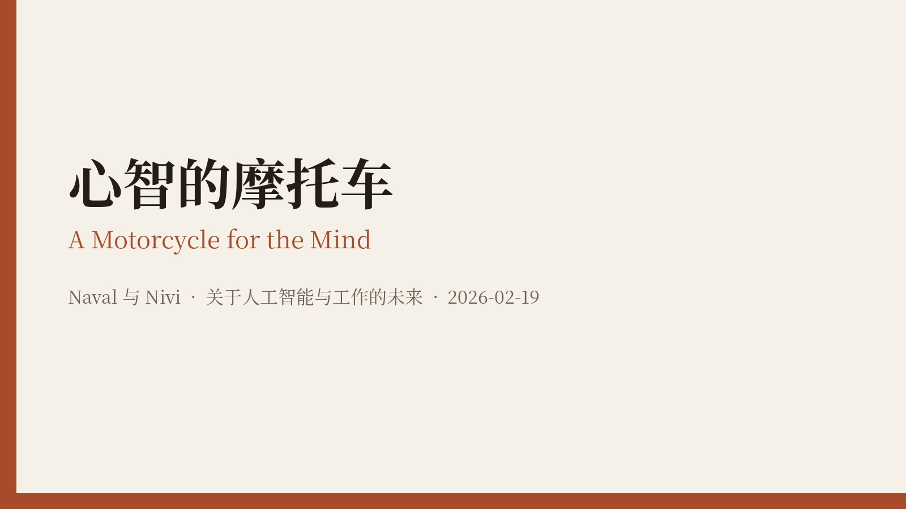
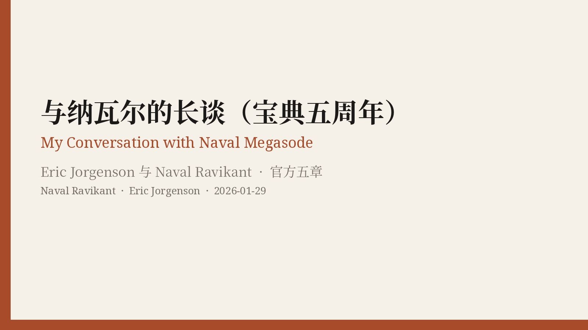
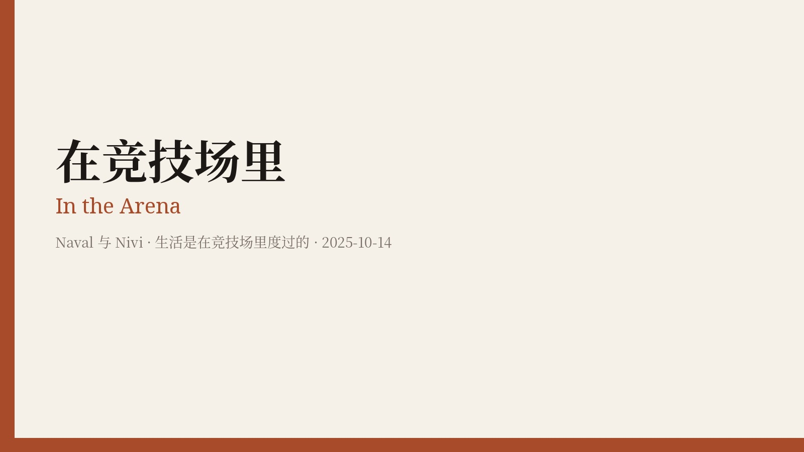
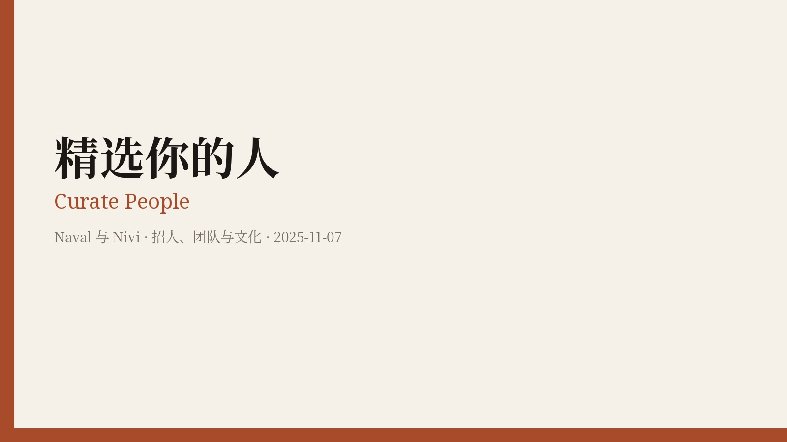
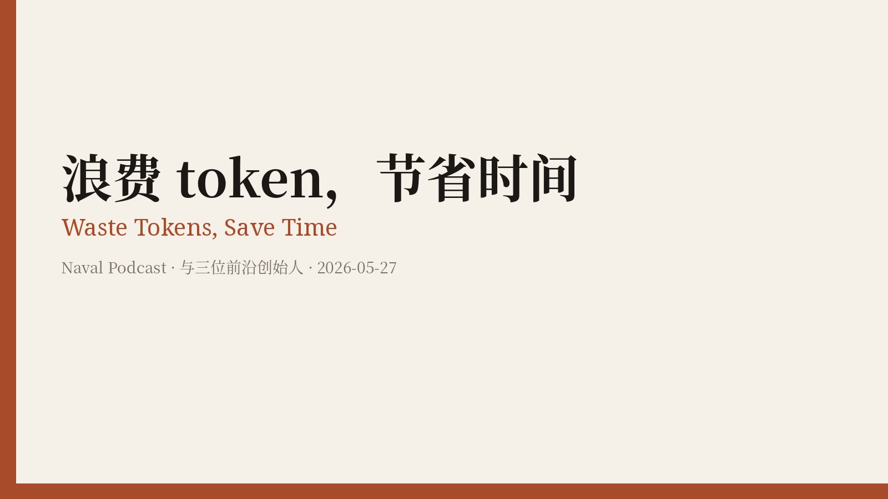
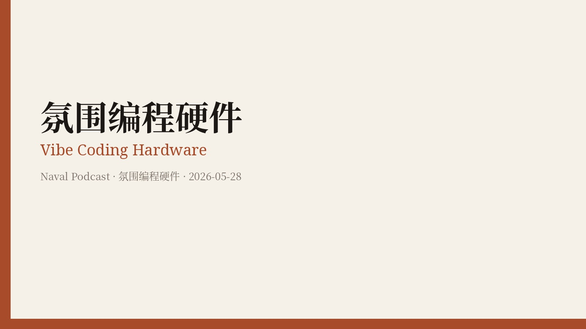
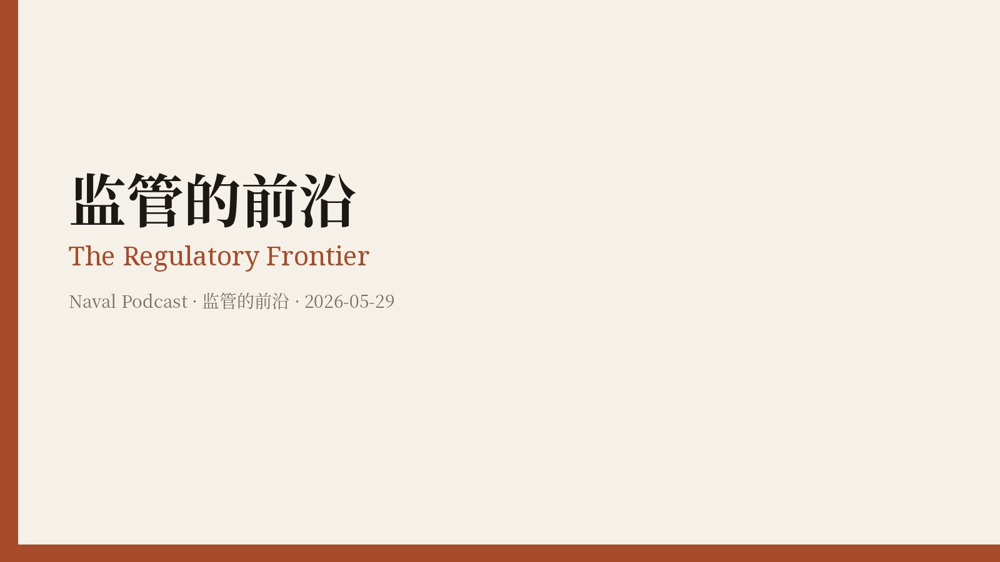
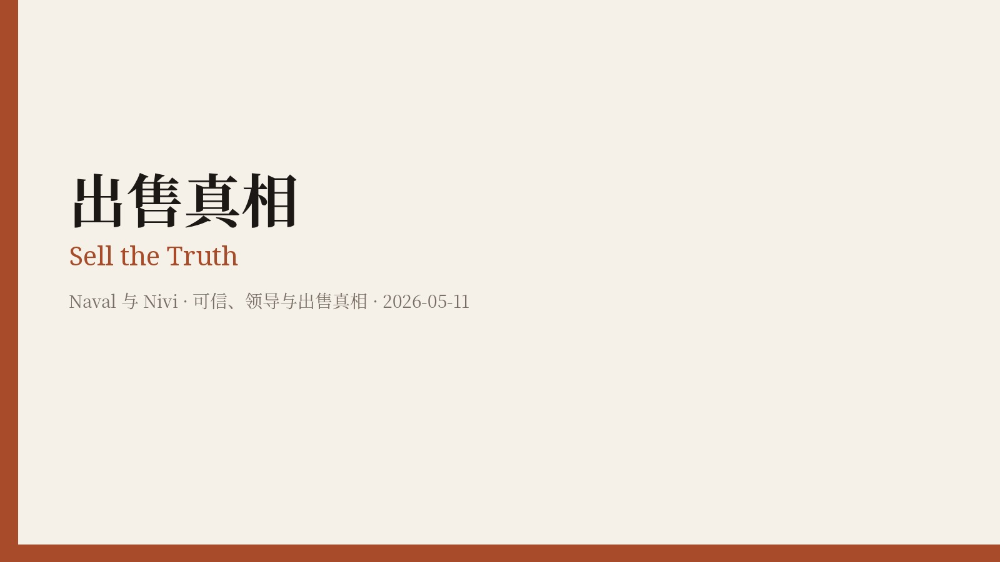
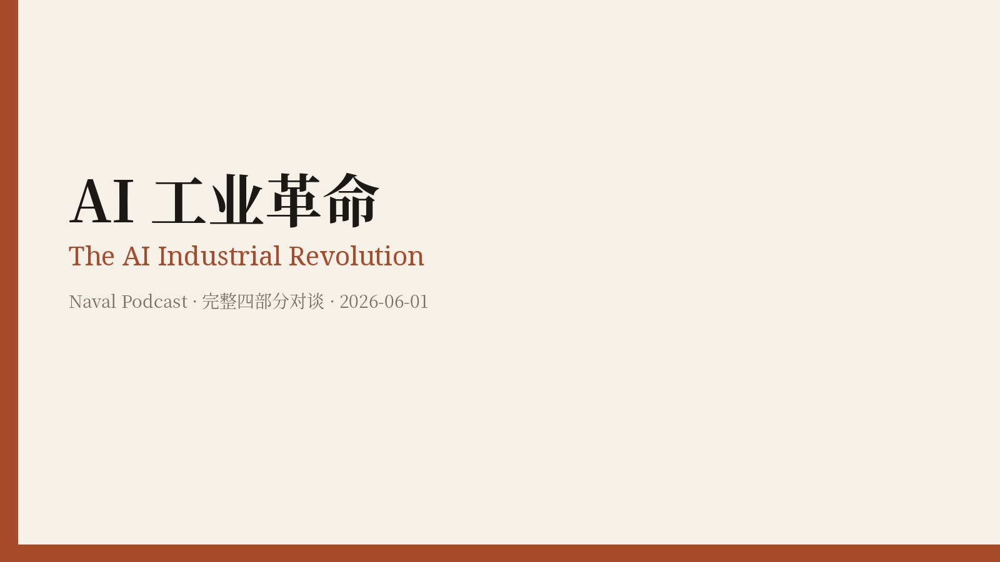

纳瓦尔 Naval Ravikant
本站收录他在《纳瓦尔宝典》之后、尤其是 2025–2026 年的新内容。英文原文来自 nav.al 官方书面稿、对照官方音视频校对的访谈，以及 @naval 的原创独立帖；中文为独立翻译，不用中信《纳瓦尔宝典》或网上的民间译本。
关于《纳瓦尔宝典》
英文可在 navalmanack.com 免费阅读，也可下载官方 PDF。版权仍归 Eric Jorgenson；官方只授权在上述渠道免费读、免费下载，没有授权第三方全文转载。简体中文翻译权已售出，中信于 2022 年 4 月出版《纳瓦尔宝典》（赵灿译，ISBN 978-7-5217-4112-4）。本站不镜像全书英文，也不提供与之竞争的全本中译，请通过官方渠道阅读英文，或购买正式出版的中译本。

44 条关于人性的残酷真相
44 Harsh Truths About Human Nature
Chris Williamson / Modern Wisdom #922。官方视频上传于 2025-03-31（Finding X 在 2026-01-10 重发同一支视频，不是新访）。YouTube 常见标题作 44 Harsh Truths About The Game of Life。幸福与成功、地位游戏、注意力、育儿与文化战争。

心智的摩托车
A Motorcycle for the Mind
纳瓦尔与尼维谈 AI 与工作的未来：氛围编程、训练模型、能动性，以及为什么解决焦虑的办法是行动。

与纳瓦尔的长谈（宝典五周年）
My Conversation with Naval Megasode
Eric Jorgenson 宝典五周年长访。官方视频上传于 2026-01-29（北京时间 2026-01-30 06:02）。官方五章：创造财富、建立判断力、学习幸福、拯救自己、哲学。

在竞技场里
In the Arena
纳瓦尔与尼维谈在竞技场里生活：通过行动学习、具体知识、保住能动性，以及好产品为何难以改动。

精选你的人
Curate People
纳瓦尔与尼维谈招人与团队：最优秀的人只想和最优秀的人一起工作，以及为什么要精选你的人。

「什么都不会发生」已经结束
‘Nothing Ever Happens’ Is Over
纳瓦尔谈完全互联的创业公司、无人机与暴力、生物威胁，以及为什么「什么都不会发生」已经结束。

浪费 token，节省时间
Waste Tokens, Save Time
纳瓦尔与吉列尔莫·劳赫、布莱克·肖尔、马克斯·霍达克谈软件工厂、浪费 token 以节省时间，以及智能体。

氛围编程硬件
Vibe Coding Hardware
同一场对谈的硬件部分：用氛围编程设计涡轮叶片，开源与中国的硬件优势，以及人类如何变成验证者。

监管的前沿
The Regulatory Frontier
同一场对谈的监管部分：红皇后竞赛、为什么医疗保健缺少创新，以及锡德的 N=1 医学故事。

回到代码
A Return to Code
纳瓦尔谈氛围编程、一次出件的个人应用，以及为什么他认为这是苹果主导地位终结的开始。

出售真相
Sell the Truth
纳瓦尔谈销售其实是可信：魅力是自信加爱，不要管理而去领导，以及出售你真正相信的真相。

AI 工业革命
The AI Industrial Revolution
与三位前沿创始人的完整对谈：浪费 token、氛围编程硬件、监管的前沿，外加约 20 分钟新内容「自主的公司」。
已存档、本批待译的 nav.al 官方稿
- Live in the Future · 2026-07-02 · 官方页只有简介和播客播放器，没有完整书面稿
纳瓦尔短帖（2026）→
@naval 在 2026-01-03 至 2026-11-06（北京时间）的全部原创独立帖，去重后 171 条，中英对照。不含转发；回复不在本批。
纳瓦尔短帖（2025）→
@naval 在 2025-01-01 至 2025-12-28（北京时间）的全部原创独立帖，去重后 244 条，中英对照。查询条件同样是 from:naval -is:retweet -is:reply；不含转发；回复不在本批。